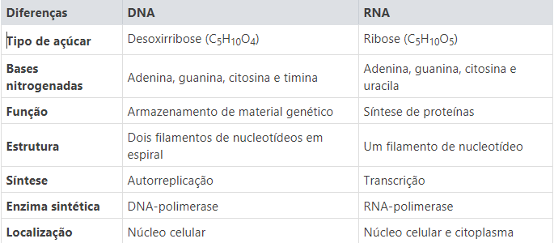
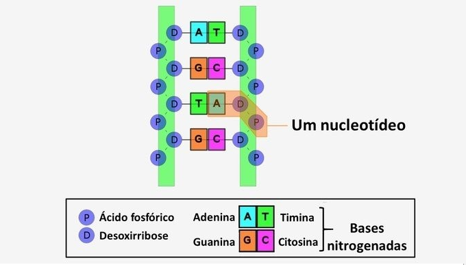
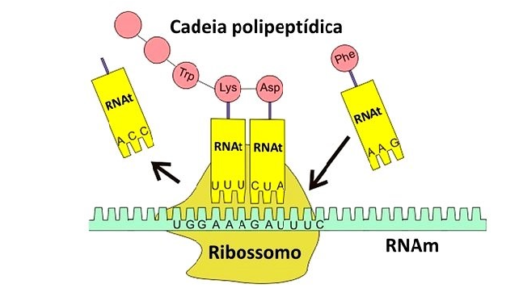

RNA e DNA
Introdução:
São ácidos nucleicos que possuem diferentes estruturas e funções. Enquanto o DNA é responsável por armazenar as informações genéticas dos seres vivos, o RNA atua na produção de proteínas.
Essas macromoléculas são subdivididas em unidades menores, os nucleotídeos.

Principais Diferenças entre DNA e RNA:
DNA: o que é, estrutura e função
O DNA é uma molécula que transmite informações genéticas codificadas de uma espécie para os seus sucessores.
Ele determina todas as características de um indivíduo e sua composição não muda de uma região do corpo para outra, nem com a idade ou ambiente.
Descrição do modelo helicoidal por Watson e Crick baseou-se no estudo das bases nitrogenadas de Erwin Chargaff, que empregando a técnica de cromatografia conseguiu identificá-las e quantificá-las.
As imagens e dados por difração de raios X obtidos por Rosalind Franklin, que trabalhava com Maurice Wilkins no King's College London, foram decisivos para a dupla chegar ao modelo apresentado.

Estrutura do DNA:
A estrutura do DNA é formada por:
- Esqueleto de fosfato (P) e açúcar (D) alternados, que se dobram formando uma dupla-hélice.
-Bases nitrogenadas (A, T, G e C) ligadas por pontes de hidrogênio, que se projetam para fora da cadeia.
-Nucleotídeos unidos por ligações fosfodiésteres.
As funções do DNA são:
- Transmissão de informações genéticas: as sequências de nucleotídeos pertencentes às fitas de DNA codificam informações. Essas informações são transferidas de uma célula mãe para as células filhas pelo processo de replicação do DNA.
- Codificação de proteínas: as informações que o DNA carrega são utilizadas para produção de proteínas, sendo o código genético responsável pela diferenciação dos aminoácidos que as compõem.
- Síntese de RNA: a transcrição do DNA produz RNA, que é utilizado para produzir proteínas através da tradução.
Antes da divisão celular, o DNA é duplicado para que as células produzidas recebam a mesma quantidade de material genético. A quebra da molécula é feita pela enzima DNA-polimerase, dividindo as duas fitas e se refazendo em duas novas moléculas de DNA.
RNA: o que é, estrutura e função
O RNA é um polímero cujos elementos da fita de ribonucleotídeos estão ligados covalentemente.
Trata-de do elemento que está entre o DNA e a produção de proteínas, ou seja, o DNA se reestrutura para formar o RNA, que por sua vez codifica a produção de proteínas.

Síntese de proteínas::
A estrutura do RNA é formada por:
- Ribonucleotídeos: ribose, fosfato e bases nitrogenadas.
- Bases púricas: adenina (A) e guanina (G).
- Bases pirimídicas: citosina (C) e uracila (U).
As funções do RNA são:
- RNA ribossômico (RNAr): formação dos ribossomos, que atuam na ligação dos aminoácidos em proteínas.
- RNA mensageiro (RNAm): transmissão da mensagem genética para os ribossomos, indicando quais os aminoácidos e qual a sequência que devem compor as proteínas.
- RNA transportador (RNAt): direcionamento dos aminoácidos no interior das células para o local de síntese de proteínas.
Para ocorrer a síntese de proteínas, alguns trechos de DNA são transcritos para o RNA mensageiro, que leva a informação ao ribossomo. O RNA transportador é responsável por trazer os aminoácidos para produção das proteínas. O ribossomo fabrica a cadeia polipeptídica de acordo com a descodificação da mensagem recebida.
Voltar
Ir para Exercícios